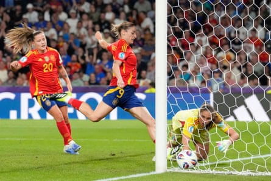

There are suggestions that the era of possession heavy, carefully choreographed, positional play, may have passed its zenith but, if that message worries Pep Guardiola disciples, Spain’s women remain unperturbed.
As usual the world champions hogged the ball as they won a third consecutive group game at Euro 2025, scoring their 12th, 13th and 14th goals of the tournament in the process.
Yet if, in one sense, it was business as usual for Montse Tomé’s queens of on-field geometry, Italy actually did a pretty good job of emphasising that La Roja are mortal after all. Indeed in certain cameos it was almost possible to detect glimpses of the way in which this particular Spanish empire might eventually fall.
Italy are not quite good enough to bring them down; not now, not yet. But Andrea Soncin has constructed a smart counterattacking unit that revelled in not merely going toe-to-toe with Spain but demonstrating why their cloak of invincibility contains a few loose threads. Opponents blessed with even greater speed and a more aggressive press should be suitably encouraged.
A draw would have been a far from unjust result but, Portugal’s defeat against Belgium, confirmed that Italy are also quarter-finalists. While Spain, as group winners, face Switzerland in the last eight back here in Berne next Friday, Soncin’s team will meet Norway in Geneva on Wednesday.
Italy swiftly settled into five at the back mode but, rapid in transition, looked to counterattack at every opportunity and it would have been no surprise had the crossbar developed a significant fissure after Elena Linari thumped the most powerful of early headers against it.
Spain failed to heed that warning and paid the price when they failed to clear a low cross. Arsenal’s Mariona Caldentey for once displayed a heavy touch and Italy’s gloriously intrepid right wing-back Elisabetta Oliviero used her left foot to expertly redirect the loose ball into the back of the net.
It prompted some prolonged, and extravagant, celebrations but when the dust finally settled, Spain suddenly started playing in the manner of a quietly furious team.
The World Cup holders evidently regarded that goal as an insult to their pride and Real Madrid’s Athenea del Castillo responded by equalising with a first-time shot into the top corner. It followed a sumptuous dribble and one-two with Barcelona’s Alèxia Putellas whose adroit back heel confounded Soncin’s rearguard.
Quite apart from repairing wounded egos it took Spain’s goal tally to 12 in three games since arriving in Switzerland while also emphasising that Del Castillo looked the brightest of the half dozen fresh faces Tomé had rotated into her starting XI.
Tomé’s side had already qualified for the quarter-finals but their evident irritation whenever Italy slowed the game down – not least as Soncin’s goalkeeper, Laura Giuliani, collapsed with an apparently unfathomable injury that enabled the manager to issue a series of urgent tactical instructions – was real.
Esther González scores a late third goal for Spain.Photograph: Martin Meissner/AP
Perhaps such rising tempers proved counter-productive to concentration because Irene Paredes subsequently, and self destructively, handled Sofia Cantore’s cross after making an awful hash of an attempted header.
Italy fans were convinced it was a stonewall penalty but a VAR review detected that Cantore had been offside in the preamble and the Barcelona centre-half, Spain’s captain, was duly able to forget one of her rather less distinguished moments.
Uefa’s half-time statistics indicated that Spain had completed more than 400 passes, while Italy had managed less than 200. Not that Tomé would be fooled; her team were in a tough match, against extremely awkward opponents with a highly effective style of their own.
It had been a hot and sunny day in Berne but, as the second half began, those fans who had made their way to the Wankdorf Stadium in shorts and T-shirts started pulling on emergency jackets and jumpers.
Soncin though suddenly started feeling the heat. He needed nothing more than his fitted white shirt and tie as Del Castillo ran, slalom style, through his defensive chicane and Martina Lenzini’s weak clearance headed to Patricia Guijarro.
She could hardly pass up such a generous invitation to shoot Spain into the lead and duly did.
No matter that it was not exactly the cleanest of hits, Guijarro’s strike still flew in via the inside of a post and Italy seemed to sense an almost palpable shift in the power balance. For the first time on the night La Roja really looked on top.
Nonetheless Adriana Nanclares, once again preferred to Cata Coll in goal by Tomé, performed wonders to prevent Cantore’s awkwardly deflected, high velocity, shot restoring parity.
Granted Giuliani did well to deny Aitana Bonmatí a chance to celebrate her recovery from meningitis by diverting the latter’s elegantly curving left-foot shot.
And, admittedly, Esther González’s close-range stoppage time goal after her connection with Putellas’s sumptuous cross highlighted Spain’s very real threat. But, on this evidence, Tomé’s team do not look unbeatable, let alone unplayable.